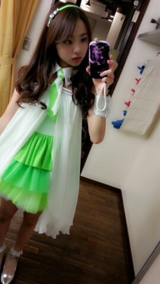

Hello−♪
ろっちーです .
昨日は、夕方から
まひろ、ゆみ、さゆりんと
とあるお仕事に
行って参りました☆
最後に ３人での写メ
貼りますね(^.^)-☆
昨日は AKB48さんの総選挙
がありましたね！
皆さんは見ましたかあ？
中には会場に行った方も
いらっしゃるんではないかと(^∨^)
まひろも、昨日の晩は
ウォーキングをし終わって
それから録画していた
総選挙を見ていました ！
まあそ−だね,そーすると
朝の６時になってしまったよ。るん
お昼まで熟睡というわけです/
指原りの様...
１位センター ！！
本当におめでとうございます (☆∀☆)
バラエティー担当さっしーさんが
先頭に立つAKB48グループ ！
これからが楽しみですね ！
それと、板野友美さんが年内に卒業し
篠田麻里子さんが 来月に卒業することを
告白しました。
思わず声に出して
「ェエーーー！！(゜ロ゜ノ)ノ」
って叫んでしまいました ♪
これからも たくさん大変なことが
待っているかもしれませんが
応援してます！頑張ってください(*・∨・*)
ぴょん ♪
まひろの衣装は
肩だしグリーンです(*´ω｀*)

肩だしグリーンはれいかと一緒です☆
３パターンの衣装から
好きなのを選べたのですが
第一希望の衣装になって
嬉ちーです (・∨・)
首もとが一番スッキリしてるかなん♪
と思って,
今までにない形がぃぃかな？と思って,,
どぉかな？
・・・
今日の晩御飯に食べた魚さん
本当おいちかった。
んだけだ(・ω・)てへ
ほな 皆様 おやすみなさい
大好きだよ？のし。
ろってぃ−より♪